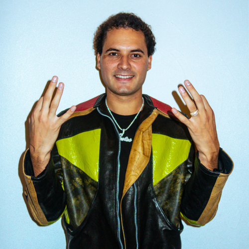

Papi Santana är hiphop- och R&B-artisten som surfat sedan han släppte sin första singel ”Ny våg” 2017.
Sen dess har han släppt flera projekt som till exempel albumen ”SINGEL NÄ ALBUM” och ”3 GÄRIS 2 DAGAR” som streamats över 10 miljoner gånger.
Papi har alltid haft en trogen sektliknande följarskara som supportar, men efter att låtarna ”FIKA & BULLAR” och ”Press” slog igenom och hamnat på Sveriges Virala topp 50-lista
har han nått ut till en ännu bredare publik. Om du ska komma på en Papi Santana-spelning kan du förvänta dig fartfyllda låtar och en hel del stage dives.